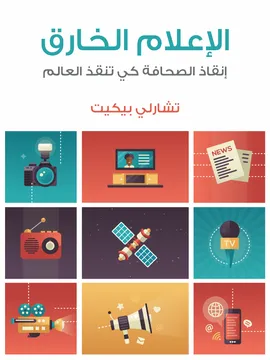

الإعلام الخارق: إنقاذ الصحافة كي تنقذ العالم

قراءة عربية أصلية محددة النطاق في الصفحات 13، 14 من ملف PDF المرتبط، وليست تلخيصا كاملا للكتاب. نناقش ما تدعمه هذه المقاطع فقط.
لن يحل الهواة محل المهنيين
يفتتح بيكيت تمهيده، بترجمة فايقة جرجس حنا، بتوضيح بادئ ذي بدء: لا يزعم أحد أن الهواة سوف يحلون أو ينبغي أن يحلوا محل المهنيين؛ فليس هذا هو الغرض من الصحافة الشبكية، المفهوم الذي يدور حوله هذا الكتاب؛ إنما تهدف الصحافة الشبكية إلى الاستفادة من فرص التعاون الجديدة التي يقدمها وسط الإنترنت المترابط؛ فقد يعمل الآن المهني والهاوي، والصحفي والمواطن العادي معًا، لتجميع ومشاركة أخبار أكثر بطرق أكثر ولأشخاص أكثر مما كان ممكنًا في أي وقت مضى. والصحافة الشبكية تقوم على حقيقة بسيطة وبديهية ونفعية: يمكننا معًا أن نفعل أكثر مما يمكن لكل منا أن يفعله على حدة. وبالفعل شرعنا أنا والمؤيدون لهذه الفكرة في العمل معًا؛ ففي خريف ٢٠٠٧ عقدت «قمة الصحافة الشبكية» في كلية الدراسات العليا للصحافة بجامعة مدينة نيويورك حيث أعمل أستاذًا مساعدًا.
زاوية وحدود القراءة
قراءة في مطلع التمهيد بترجمة فايقة جرجس حنا (ص 13-14 من الملف)، ولا تدعي تلخيص أطروحة الكتاب في إنقاذ الصحافة.
الطبعة والقراءة
هذا الكتاب صادر ومتاح مجانًا من مؤسسة هنداوي عبر صفحة الكتاب الرسمية وملفها المرتبط.
تنزيل PDF المجاني ↓ القراءة والمصدر الرسمي ↗